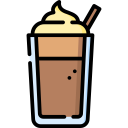

COFFEE
 CAFFÈ MOCHA $12.50
CAFFÈ MOCHA $12.50
A caffè latte with chocolate and whipped cream, made by pouring about 2 cl of chocolate sauce into the glass, followed by an espresso shot and steamed
CAPPUCCINO $15.50
A coffee drink consisting of espresso and a milk foam mixture (drink size about 160–240 ml). Served in a cappuccino cup.
COLD BREW COFFEE $17.00
Cold Brew Coffee is a smooth, cold beverage prepared by brewing freshly ground coffee in cold water. In the Cold Brew process, time makes up for heat.
.png) ICED LATTE $16.50
ICED LATTE $16.50
Ice, cold milk and an espresso in a latte glass (about 300 ml), often mixed with some sugar or flavoured syrup. Served in a latte glass.
 LATTE MACCHIATO Hot!
$20.00
LATTE MACCHIATO Hot!
$20.00
Like a traditional caffè latte, but with a thicker layer of foam. Often made by pouring an espresso last into the milk (drink size about 300 ml). Served in a latte glass.
FRAPPÉ $16.50
Rich iced coffee made of espresso, milk and ice. Flavoured syrup can be added (about 300 ml). Mixed in a blender and served for example in a latte glass.
AFFOGATO $20.00
Espresso poured on a vanilla ice cream. Served in a cappuccino cup.
DRINKS
.png) Espresso Martini $12.50
Espresso Martini $12.50
Straight from London, the Espresso Martini is sure to get you buzzing with a shot of espresso, coffee-flavored liqueur, and vodka.
 Whiskey Sour $15.50
Whiskey Sour $15.50
A mixture of whiskey, sugar, and lemon, the Whiskey Sour used to be made with egg white, but that ingredient isn't as common anymore.
Manhattan $17.00
The classic Manhattan is two parts whiskey, one part sweet vermouth, and bitters.
Bloody Mary $15.50
A classic brunch cocktail, the Bloody Mary is traditionally made with vodka, tomato juice, Worcestershire sauce, black pepper, celery salt, Tabasco, and lemon juice.
Moscow Mule $16.50
Served in an ice-cold copper mug, the Moscow Mule is composed of vodka, ginger beer, and lime juice.
Daiquiri $20.00
Let the tasty simplicity of the Daiquiri change your mind with the sweet, fresh flavors of light rum, sugar, and lime.